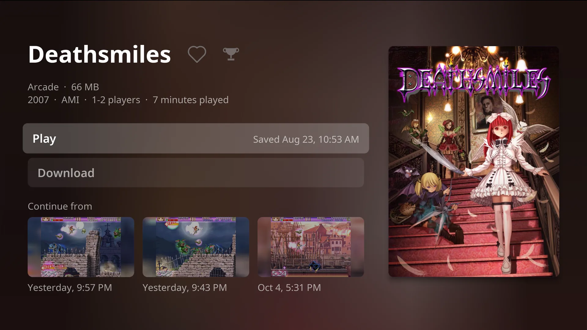
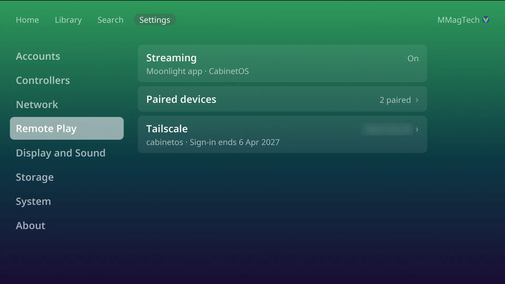
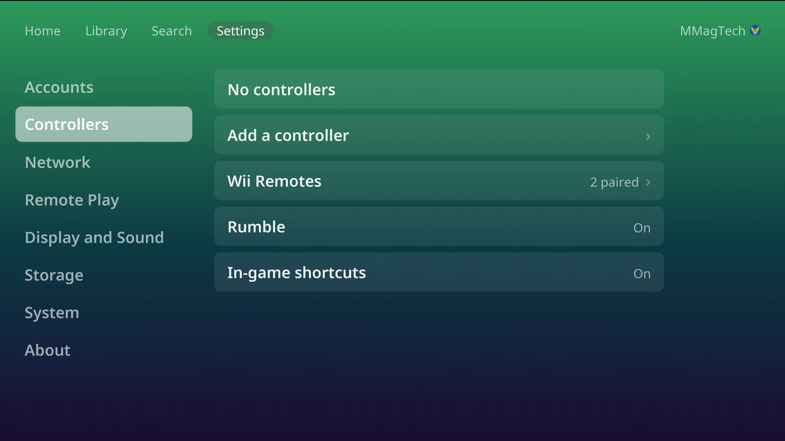
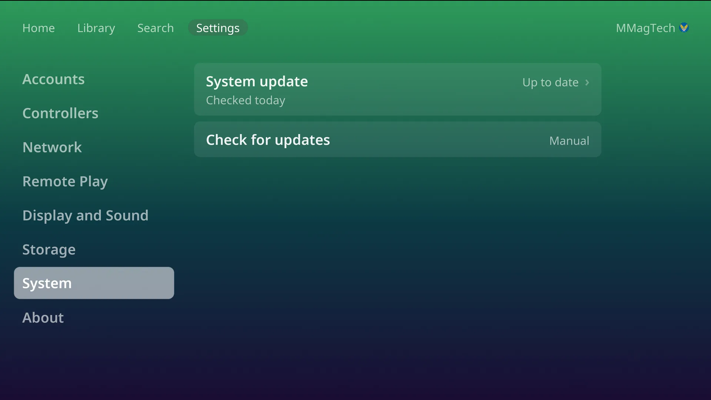
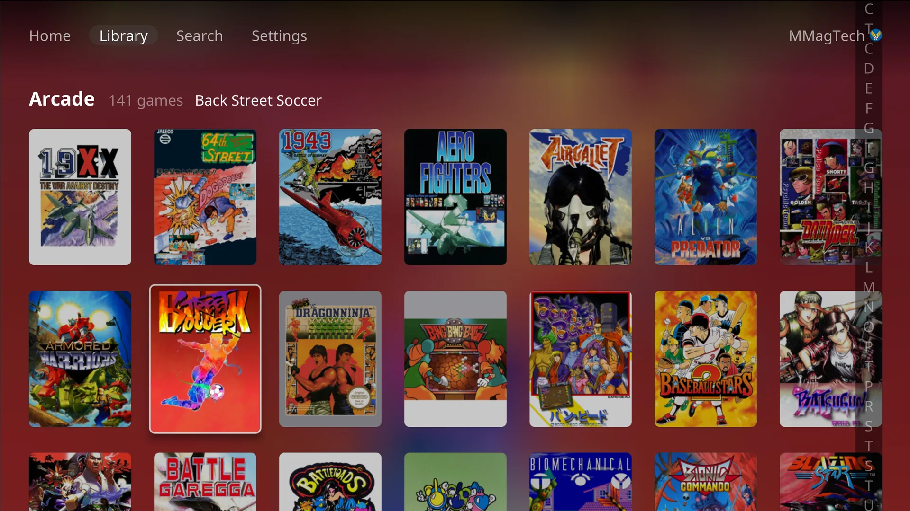
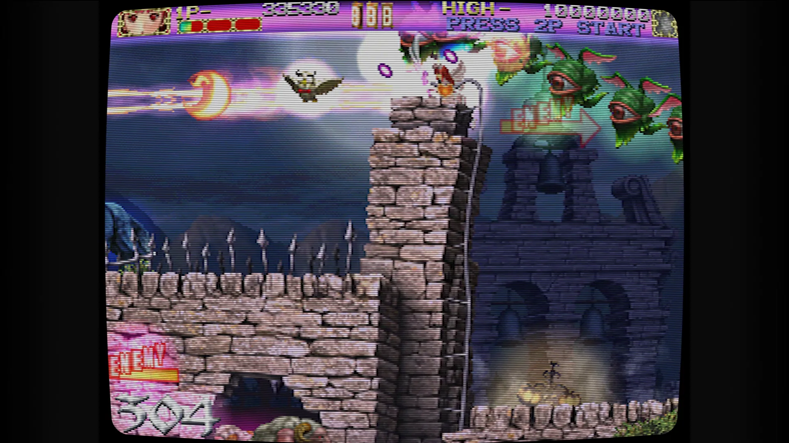
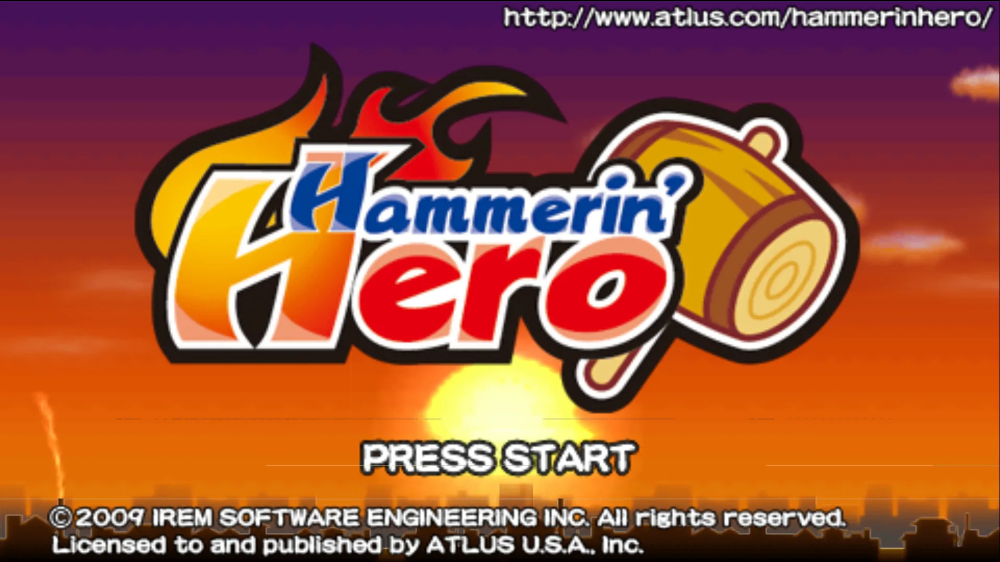
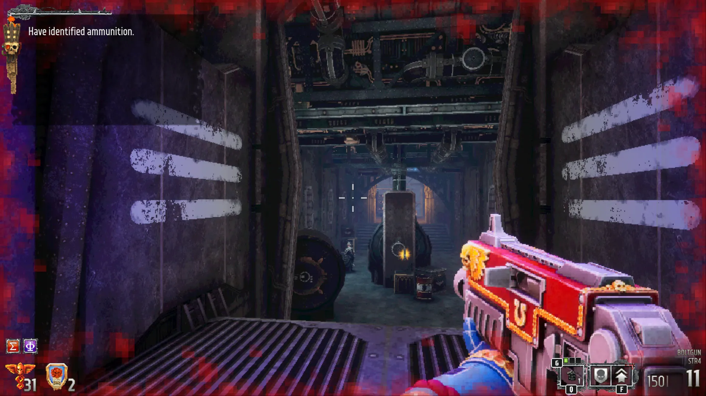

Your whole game library, on the TV, as a console.
CabinetOS turns a small PC into a games console. It plays 33 systems, from the Atari 2600 to the Switch, straight from your own RomM server. Switch it on and pick up a controller. That is all.
Recorded from the console's own picture on the TV. Nothing staged, nothing sped up.
Made for the couch
A console, not a computer pretending to be one.
No desktop, no app store, no file browser. Every screen works with a controller, and the library is always the one on your server.
Pick up exactly where you left off
Every game page shows your last three save states, each with a picture of the moment. Press one and you are back in.
- Saves and states go to your RomM server by themselves.
- Carry on from the same save on another CabinetOS console, or in Cabinet on Apple TV.
- The first game on Home is always the last one you played, one press from resuming.
Your library, the moment it boots
Home has what you played last and what you love. The Library has every system on your server, with covers, play time and a letter jump for big collections.
- Search as you type.
- Download a game to keep it, or just press Play.
- Server down? Everything already on the console still plays.
Make it look the way you remember
Choose how each system's picture looks, right from the pause menu, while the game waits behind it.
- CRT looks for the TV consoles, LCD and dot-matrix looks for the handhelds.
- 3D games render up to 4K on capable hardware, with one Picture setting for everything.
- The pause menu is the same in every game, on every system: both sticks, pressed together.
Bright colours for the whole family
Sixteen colours, from calm purple to Sunset, Aurora and Fire. Everyone picks their own, and the whole console changes when they sign in.
A darker look for the evening can switch on by itself at the hours you choose.

Everyone gets their own
Each person signs in to RomM once, by scanning a code on the TV with their phone. From then on their saves, states, favourites, play time and colour are theirs.
- Switch person from the top of Home.
- A four-digit PIN keeps the grown-up settings grown-up.
- RetroAchievements, with a trophy on every game that has them.

Play from your phone, at home or away
Turn on Remote Play and the whole console streams to Moonlight on a phone, tablet or computer. Your phone's controller becomes player one.
- Pair by typing the four digits Moonlight shows into the TV.
- Away from home, Tailscale connects you without opening your network.
Your Steam games, on the same console
Steam's Big Picture is one press away. Switch to Steam from the Power menu, play your PC games on the same TV, and quit Steam to land straight back on Home.
- Steam installs from the console and gets its own space on the drive.
- Remote Play streams Steam to your phone too, with the phone's controller as player one.

Real Wii Remotes
Wii games with pointer and all, your Miis copied in, and up to four players on any pads.

Updates in one press
The whole system updates as one image, downloaded in the background and applied at the next restart.

Big libraries, quick
The triggers jump a letter at a time through hundreds of games.
Real games, real TV
From 16-bit to 4K.
Captured from the console itself, on an LG C1, playing from a RomM server on the home network.



33 systems
What it plays.
Each one with an emulator chosen and tuned for it, and the BIOS, firmware or keys it needs fetched from your server when you press Play.
What you need
Four things.
x86-64 with AMD Radeon graphics. Built and tested on the GEEKOM A9 Max.
RomM 5.1 or newer, holding your games, BIOS and firmware.
Bluetooth or USB. Wii Remotes work too.
Any HDMI TV. The console runs at the TV's own resolution, 4K included.
Ready to build yours?
The wiki takes you from a blank PC to playing, one step at a time.